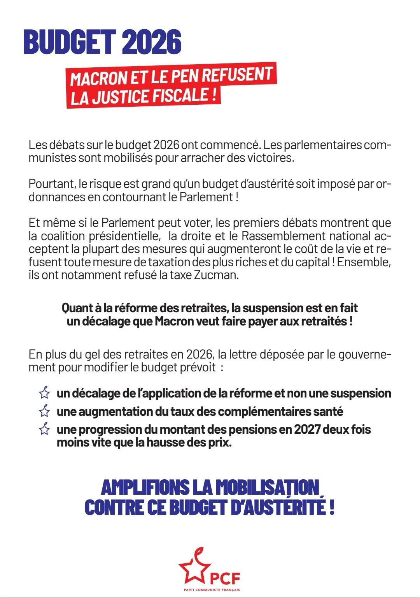
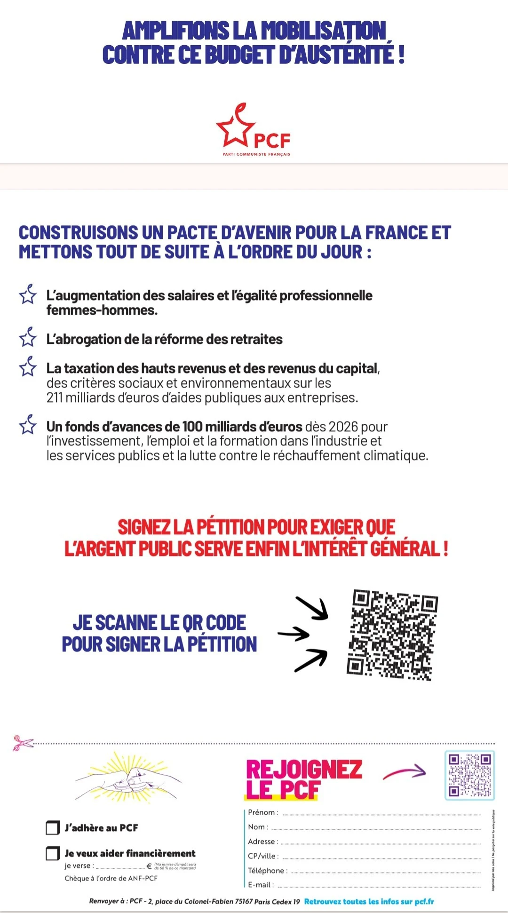

Prise de position
Budget 2026. Les communistes veulent que les plus riches paient leur part
Date indiquée par Facebook · 3 novembre 2025
Repères éditoriaux
Le PCF et les députés communistes dénoncent le rejet de la taxe Zucman. Le tract diffusé à cette occasion appelle à résister à l’austérité et à faire contribuer les grandes fortunes.
Texte conservé avec la publication
Le PCF et Les députés communistes continueront de se battre pour que les plus riches paient leur part.
Le bloc central et le RN rejettent la taxe Zucman sur les ultra-riches, même une taxe assez light, simple principe de justice fiscale… mais visiblement, même ça, c’est trop demander pour eux.
#taxezucman #JusticeFiscale #PCF


Sources
Archive rouge · export Facebook · AR-0002-FB-00966
À lire aussi · Le RN vote en commission contre la taxe Zucman